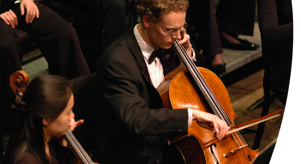
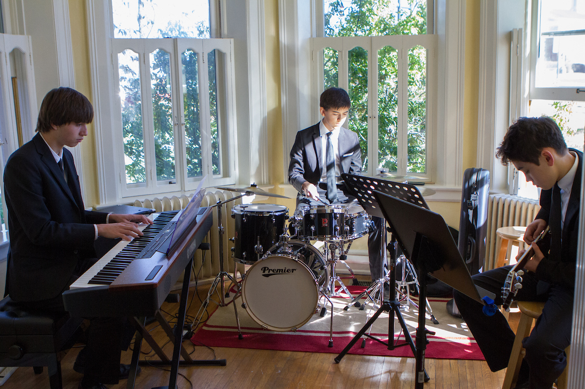
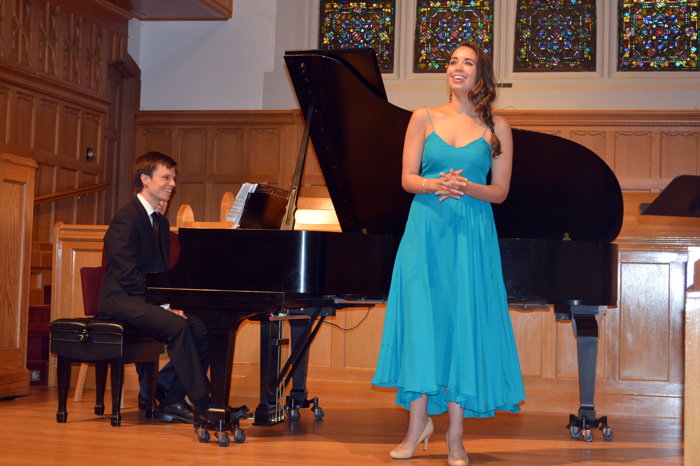

For answers to some frequently asked questions, see here.
About MusiCal
MusiCal gathers information about upcoming musical performances in the Greater Cincinnati area and aggregates these events into an easy to navigate platform. We created MusiCal so that thes musical arts can be discovered and shared easily with friends and the community.
Events on MusiCal are assembled from event venues such as:
College Conservatory of Music at University of Cincinnati
Nationally ranked and internationally renowned, the University of Cincinnati College-Conservatory of Music (CCM) is a preeminent institution for the performing and media arts. CCM provides life-changing experiences within a highly creative and multidisciplinary artistic environment.
The synergy created by housing CCM within a comprehensive public university gives the college its unique character and defines its objective: to educate and inspire the whole artist and scholar for positions on the world's stage.CCM's educational roots date back to 1867, and a solid, visionary instruction has been at its core since that time.
Souers Recital Hall at Miami University

Sidney W. Souers Recital Hall is the primary venue for Miami University's series of recitals, chamber music, and master classes. Nearly 100 public events are presented in Souers each year. The hall seats 150 and currently houses two Steinway grand pianos, a model D and a model B.
MU Department of Music CalendarOxford Community Arts Center
Oxford Community Arts group was formed in 1998. Community need for an arts facility had long been identified, and Miami University was about to dispose of the large, historic building that was once Oxford College for Women. A group of 12 formed a steering committee to save the building as a center for the arts in our area. The group was incorporated in 2001.
The Mission of the Oxford Community Arts Center (OCAC) is to ENRICH lives and build community by providing, celebrating and promoting a diverse array of cultural and arts programming, performances and exhibits; carefully PRESERVE the historic Oxford College building and campus as a welcoming environment offering classroom, studio, rehearsal, concert, theatre and meeting spaces; and ENSURE the Center’s ability to serve future generations as a catalyst, connector and magnet for emerging and established artists, performers, students, visitors and arts organizations.
OCAC Events CalendarNational Association of Teachers of Singing
Founded in 1944, National Association of Teachers of Singing, Inc. (NATS) is the largest professional association of teachers of singing in the world with nearly 7,000 members in the United States, Canada, and nearly 30 other countries. Internationally, NATS is represented in Argentina, Australia, Austria, Belgium, Bolivia, Brazil, China, Colombia, Denmark, France, Germany, Greece, Hungary, Indonesia, Ireland, Italy, Japan, Malaysia, Mexico, Netherlands, Portugal, Singapore, South Korea, Spain, Sweden, Switzerland, Taiwan, and the United Kingdom, with the number of countries growing every year.
NATS Events CalendarMatinee Musicale
The Matinée Musicale Club began in 1911 when a group of Cincinnati women, all performing musicians, joined forces to present five public concerts that year and in 1912. In 1913 the club launched the Matinée Musicale Recital Series, engaging professional musicians from around the world.
Today Matinée Musicale Cincinnati is made up of active, professional and retired musicians, music teachers and other musical enthusiasts. For more than 100 seasons, these dedicated members have sustained a standard of musical excellence established by the club’s founders.
Matinée Musicale has played an important role in Cincinnati’s musical history. Thanks to the club’s efforts, the city, widely acknowledged as fertile ground for the performing arts, especially classical music, saw early performances by numerous instrumentalists and vocalists who became classical music stars.
Matinee Musicale ConcertsMusiCal also allows user-submitted events! To submit an event, click here